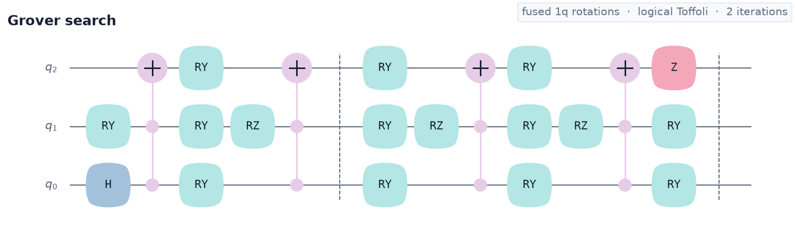
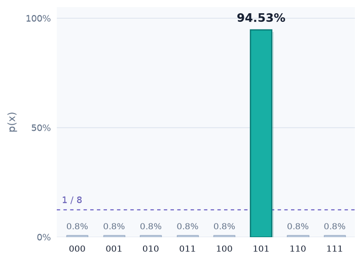
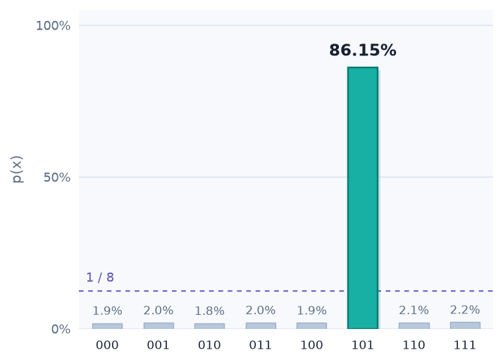
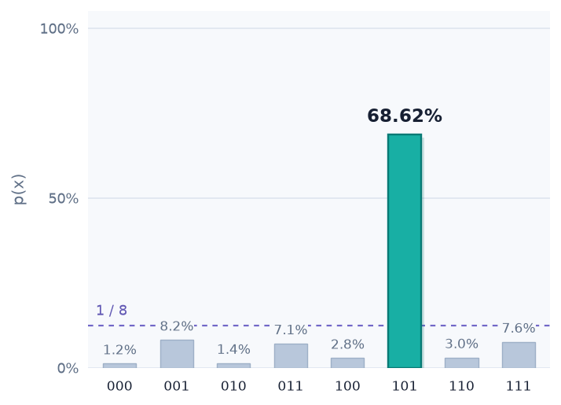
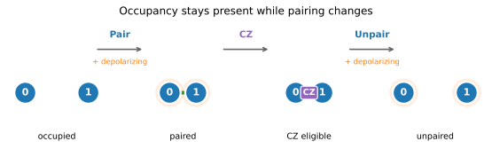
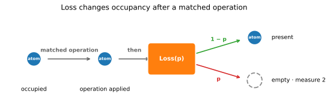

Development status: FatQat is under active development, and its interfaces may change between releases. Pin an exact version when reproducibility matters.
-
One quantum program
Keep gates, measurements, conditions, parameters, qudits, and direct controls in a single
Program. -
Only the detail you need
Start with algorithm behavior, add device constraints when needed, or follow continuous-time dynamics when the physics matters.
-
One execution workflow
Every backend accepts a
Programand uses the sameResultinterface, while validating what it can realize.
One workflow, three execution levels¶
Every path starts from the same Program and returns familiar
Job and Result objects. Choose the least physical detail that can answer the
question in front of you.
-
General simulation
Inspect states, counts, and channel noise when algorithm behavior is the question.
-
Hardware-profile simulation
Add native gates and connectivity when device constraints matter.
-
Hamiltonian emulation
Follow pulse dynamics, leakage, crosstalk, and non-Markovian effects when physical behavior matters.
One Grover algorithm, three execution levels¶
This three-qubit Grover search begins with all eight bit strings equally
likely. Two iterations mark 101 and amplify it. The results below show how
three execution levels change the outcome as hardware constraints and physical
dynamics are introduced.

-
General
Simulator
Circuit-level evolution returns
101with 94.53% probability. -
SCQubitSimulator
With
T1 = T2 = 200 µs, we add CZ depolarizing noise withp = 0.003. Compiled native-gate simulation then returns101with 86.15% probability. -
TransmonEmulator
Calibrated pulses, three physical levels, and the same coherence times return
101with about 68.5% probability; physical leakage is 0.0446%. Most of the error comes from imperfectiSWAPgates.
Shared algorithm source — home_grover_program.py
The compact circuit view and fused rotation data live in this visible source. The general and Transmon scripts share the rotation Program; the SC script builds equivalent QASM and compiles it to the canonical native basis.
"""Define Grover gate data and Programs for the homepage examples."""
from collections import Counter
from math import pi
import fatqat as fq
import fatqat.operations as ops
TARGET = "101"
TARGET_INDEX = int(TARGET, 2)
# Each rotation angle is expressed in quarter turns (pi / 4). This is the
# exact, fused nearest-neighbour realization of two Grover iterations for 101.
FUSED_GATES = (
("RY", 0, -2), ("RX", 1, -1), ("CZ", 0, 1), ("RY", 1, 2),
("RX", 2, 1), ("CZ", 1, 2), ("RZ", 1, 3), ("RY", 1, 2),
("CZ", 0, 1), ("RY", 1, -2), ("RX", 2, 1), ("CZ", 1, 2),
("RY", 1, 2), ("CZ", 0, 1), ("RY", 1, -2), ("RX", 2, -1),
("CZ", 1, 2), ("RY", 1, 2), ("CZ", 0, 1), ("RY", 1, -2),
("RX", 2, -1), ("CZ", 1, 2), ("RZ", 0, -3), ("RY", 0, 2),
("RX", 1, -3), ("CZ", 0, 1), ("RY", 1, -2), ("RZ", 2, -1),
("RY", 2, -2), ("CZ", 1, 2), ("RZ", 1, -1), ("RY", 1, 2),
("CZ", 0, 1), ("RY", 1, -2), ("RX", 2, 1), ("CZ", 1, 2),
("RY", 1, 2), ("CZ", 0, 1), ("RY", 1, -2), ("RX", 2, -1),
("CZ", 1, 2), ("RY", 1, 2), ("CZ", 0, 1), ("RY", 1, -2),
("RX", 2, -1), ("CZ", 1, 2), ("RZ", 0, 1), ("RY", 0, -2),
("RX", 1, -3), ("CZ", 0, 1), ("RY", 1, -2), ("RZ", 2, 1),
("RY", 2, 2), ("CZ", 1, 2), ("RZ", 1, -1), ("RY", 1, 2),
("CZ", 0, 1), ("RY", 1, -2), ("RX", 2, 1), ("CZ", 1, 2),
("RY", 1, 2), ("CZ", 0, 1), ("RY", 1, -2), ("RX", 2, -1),
("CZ", 1, 2), ("RY", 1, 2), ("CZ", 0, 1), ("RY", 1, -2),
("RX", 2, -1), ("CZ", 1, 2), ("RZ", 0, 1), ("RY", 0, 2),
("RX", 1, -3), ("CZ", 0, 1), ("RY", 1, -2), ("RZ", 2, -1),
("RY", 2, -2), ("CZ", 1, 2), ("RZ", 1, -1), ("RY", 1, 2),
("CZ", 0, 1), ("RY", 1, -2), ("RX", 2, 1), ("CZ", 1, 2),
("RY", 1, 2), ("CZ", 0, 1), ("RY", 1, -2), ("RX", 2, -1),
("CZ", 1, 2), ("RY", 1, 2), ("CZ", 0, 1), ("RY", 1, -2),
("RX", 2, -1), ("CZ", 1, 2), ("RZ", 0, 1), ("RY", 0, -2),
("RY", 1, 2), ("RZ", 1, -4), ("RZ", 2, -4),
)
def build_native_program():
"""Build the fused rotation Program shared by two execution examples."""
program = fq.Program(3)
rotations = {"RX": ops.RX, "RY": ops.RY, "RZ": ops.RZ}
for gate in FUSED_GATES:
if gate[0] == "CZ":
program.add(ops.CZ, gate[1:])
else:
name, target, quarter_turns = gate
program.add(rotations[name](quarter_turns * pi / 4), target)
counts = Counter(gate[0] for gate in FUSED_GATES)
assert counts == {"RX": 17, "RY": 37, "RZ": 13, "CZ": 32}
assert all(
gate[0] != "CZ" or abs(gate[1] - gate[2]) == 1
for gate in FUSED_GATES
)
return program
def build_logical_program():
"""Build the equivalent compact Program used for the circuit drawing."""
program = fq.Program(3)
def fused_layer(*rotations, rz_targets=()):
for target, theta in rotations:
program.add(ops.RY(theta), target)
for target in rz_targets:
program.add(ops.RZ(pi), target)
program.add(ops.H, 0)
fused_layer((1, pi / 2))
program.add(ops.CCX, (0, 1, 2))
fused_layer((0, pi / 2), (1, pi / 2), (2, -pi / 2), rz_targets=(1,))
program.add(ops.CCX, (0, 1, 2))
program.add(ops.Barrier, (0, 1, 2))
fused_layer((0, -pi / 2), (1, pi / 2), (2, pi / 2), rz_targets=(1,))
program.add(ops.CCX, (0, 1, 2))
fused_layer((0, pi / 2), (1, pi / 2), (2, -pi / 2), rz_targets=(1,))
program.add(ops.CCX, (0, 1, 2))
fused_layer((0, -pi / 2), (1, -pi / 2))
program.add(ops.Z, 2)
program.add(ops.Barrier, (0, 1, 2))
return program
Run each execution model independently
Each tab is a top-to-bottom script. It uses the algorithm representation appropriate to its target, while private plotting details stay out of the execution flow.
"""Run the fused Grover Program on the general Simulator."""
import matplotlib.pyplot as plt
import numpy as np
import fatqat as fq
from _home_grover_plot import (
CIRCUIT_FIGURE,
GENERAL_FIGURE,
PROGRAM_DRAW_STYLE,
draw_distribution,
style_program_figure,
)
from home_grover_program import (
TARGET,
TARGET_INDEX,
build_logical_program,
build_native_program,
)
program = build_native_program()
simulator = fq.simulator.Simulator(runtime="numpy")
state = (
simulator.run(
program,
shots=0,
result_config={"counts": False, "final_state": True},
)
.result()
.get_statevector()
)
probabilities = np.abs(state) ** 2
probabilities /= probabilities.sum()
logical_program = build_logical_program()
logical_state = (
simulator.run(
logical_program,
shots=0,
result_config={"counts": False, "final_state": True},
)
.result()
.get_statevector()
)
overlap = np.vdot(state, logical_state)
assert np.isclose(probabilities.sum(), 1.0)
assert np.argmax(probabilities) == TARGET_INDEX
assert np.isclose(probabilities[TARGET_INDEX], 0.9453125, atol=1e-12)
assert np.isclose(abs(overlap), 1.0, atol=1e-12)
assert np.allclose(logical_state, overlap * state, atol=1e-12)
print(f"General Simulator P({TARGET}) = {probabilities[TARGET_INDEX]:.8%}")
circuit_figure = plt.figure(CIRCUIT_FIGURE, figsize=(13.0, 3.2), facecolor="white")
circuit_axis = circuit_figure.add_subplot()
logical_program.draw(ax=circuit_axis, **PROGRAM_DRAW_STYLE)
style_program_figure(circuit_figure, circuit_axis)
draw_distribution(GENERAL_FIGURE, probabilities)
if __name__ == "__main__":
plt.show()
"""Compile and run an equivalent Grover program on SCQubitSimulator."""
import matplotlib.pyplot as plt
import numpy as np
import fatqat as fq
import fatqat.operations as ops
from fatqat.compiler import compile_qasm_to_sc
from _home_grover_plot import draw_distribution
from home_grover_program import FUSED_GATES, TARGET, TARGET_INDEX
PROFILE_FIGURE = "grover-sc-profile.png"
T1_SECONDS = 200e-6
T2_SECONDS = 200e-6
SX_DURATION_SECONDS = 20e-9
CZ_DURATION_SECONDS = 50e-9
EDGE_CZ_DEPOLARIZING_P = {
(0, 1): 0.003,
(1, 2): 0.003,
}
def build_sc_qasm():
"""Build equivalent QASM for the canonical SC compiler route."""
statements = ["OPENQASM 3.0;", "qubit[3] q;"]
for gate in FUSED_GATES:
if gate[0] == "CZ":
statements.append(f"cz q[{gate[1]}], q[{gate[2]}];")
continue
name, target, quarter_turns = gate
statements.append(f"{name.lower()}({quarter_turns} * pi / 4) q[{target}];")
return "\n".join(statements)
SC_QASM = build_sc_qasm()
COUPLINGS = ((0, 1), (1, 2))
compiler_backend = fq.simulator.SCQubitSimulator(
num_qubits=3,
couplings=COUPLINGS,
runtime="numpy",
)
compiled = compile_qasm_to_sc(SC_QASM, compiler_backend)
resource_layout = compiled.resource_layout
noise = fq.NoiseModel()
def coherence_channels(duration):
"""Return finite simulator channels for the configured T1 and T2."""
amplitude_p = -np.expm1(-duration / T1_SECONDS)
pure_dephasing_rate = 1 / T2_SECONDS - 1 / (2 * T1_SECONDS)
phase_p = -np.expm1(-pure_dephasing_rate * duration)
return (
fq.noise.AmplitudeDamping(p=amplitude_p),
fq.noise.PhaseDamping(p=phase_p),
)
for operation in (ops.X, ops.SX):
damping, dephasing = coherence_channels(SX_DURATION_SECONDS)
noise.add(damping, operation=operation)
noise.add(dephasing, operation=operation)
damping, dephasing = coherence_channels(CZ_DURATION_SECONDS)
for target_position in (0, 1):
noise.add(damping, operation=ops.CZ, target_positions=(target_position,))
noise.add(dephasing, operation=ops.CZ, target_positions=(target_position,))
refs_by_site = {resource_layout.device_label(ref): ref for ref in resource_layout.refs}
# Add explicit depolarizing noise on top of the T1/T2 channels.
for edge, depolarizing_p in EDGE_CZ_DEPOLARIZING_P.items():
noise.add(
fq.noise.Depolarizing(p=depolarizing_p),
operation=ops.CZ,
targets=tuple(refs_by_site[site] for site in edge),
)
density_matrix = (
fq.simulator.SCQubitSimulator(
num_qubits=3,
couplings=COUPLINGS,
method="density_matrix",
runtime="numpy",
noise=noise,
)
.run(
compiled,
shots=0,
result_config={"counts": False, "final_state": True},
)
.result()
.get_density_matrix()
)
probabilities = np.clip(np.real(np.diag(density_matrix)), 0.0, None)
probabilities /= probabilities.sum()
assert np.isclose(probabilities.sum(), 1.0)
assert np.argmax(probabilities) == TARGET_INDEX
assert np.isclose(probabilities[TARGET_INDEX], 0.8615386277, atol=5e-7)
print(f"SCQubitSimulator P({TARGET}) = {probabilities[TARGET_INDEX]:.8%}")
draw_distribution(PROFILE_FIGURE, probabilities)
if __name__ == "__main__":
plt.show()
"""Run the fused Grover Program on a three-level TransmonEmulator."""
from itertools import product
import matplotlib.pyplot as plt
import numpy as np
import fatqat as fq
from _home_grover_plot import draw_distribution
from home_grover_program import (
TARGET,
TARGET_INDEX,
build_native_program,
)
TRANSMON_FIGURE = "grover-transmon.png"
T1_NANOSECONDS = 200_000.0
T2_NANOSECONDS = 200_000.0
model_document = {
"format": {"id": "sc.transmon_exchange", "version": 1},
"model": {"id": "grover-three-transmon-line", "revision": "2026-08-30"},
"system": {
"subsystem_type": "transmon",
"subsystems": ["q0", "q1", "q2"],
"control_edges": [
{"id": "e01", "subsystems": ["q0", "q1"]},
{"id": "e12", "subsystems": ["q1", "q2"]},
],
},
"units": {"frequency": "GHz", "anharmonicity": "GHz"},
"parameters": {
"subsystems": {
"q0": {"frequency": 5.10, "anharmonicity": -0.22},
"q1": {"frequency": 5.22, "anharmonicity": -0.24},
"q2": {"frequency": 5.34, "anharmonicity": -0.22},
}
},
}
model = fq.emulator.TransmonModel.from_document(model_document)
calibration_document = {
"format": {"id": "sc.transmon_exchange_fixed_pulse", "version": 1},
"calibration": {
"id": "grover-three-transmon-line",
"revision": "2026-08-30",
},
"units": {"time": "ns", "frequency": "GHz", "dimensionless": "1"},
"recipes": {
"rx_ry": {"duration": 20.0, "drag_coefficient": 1.0},
"iswap": {"duration": 40.0},
"cz": {
"edges": [
{
"canonical_edge": ["q0", "q1"],
"recipe": {
"detuned_subsystem": "q0",
"duration": 60.0,
"ramp_duration": 3.0,
"park_detuning_ghz": 0.22,
"branch_tolerance_ghz": 1e-12,
},
},
{
"canonical_edge": ["q1", "q2"],
"recipe": {
"detuned_subsystem": "q1",
"duration": 60.0,
"ramp_duration": 3.0,
"park_detuning_ghz": 0.24,
"branch_tolerance_ghz": 1e-12,
},
}
],
},
},
}
calibration = fq.emulator.TransmonCalibration(calibration_document)
noise = fq.NoiseModel()
for subsystem in model.subsystem_ids:
noise.add(
fq.noise.TransitionRelaxation(
rate=1 / T1_NANOSECONDS,
coefficients={(1, 0): 1.0, (2, 1): np.sqrt(2.0)},
),
targets=subsystem,
)
noise.add(
fq.noise.PhaseDamping(
rate=1 / T2_NANOSECONDS - 1 / (2 * T1_NANOSECONDS)
),
targets=subsystem,
)
program = build_native_program()
emulator = fq.emulator.TransmonEmulator(
model,
method="density_matrix",
noise=noise,
gate_implementation_map=fq.emulator.default_transmon_gate_implementation_map(
model=model,
calibration=calibration,
),
)
density_matrix = (
emulator.run(
program,
shots=0,
result_config={"counts": False, "final_state": True},
)
.result()
.get_density_matrix()
)
physical = np.clip(np.real(np.diag(density_matrix)), 0.0, None)
physical /= physical.sum()
physical = physical.reshape((3, 3, 3))
binary = np.zeros(8)
leakage = 0.0
for levels in product(range(3), repeat=3):
probability = physical[levels]
outcome = sum(
(level > 0) << (len(levels) - 1 - factor) for factor, level in enumerate(levels)
)
binary[outcome] += probability
if 2 in levels:
leakage += probability
probabilities = binary / binary.sum()
assert np.isclose(probabilities.sum(), 1.0)
assert np.argmax(probabilities) == TARGET_INDEX
assert np.isclose(probabilities[TARGET_INDEX], 0.68591064, atol=1e-3)
assert np.isclose(leakage, 0.0004458410, atol=5e-7)
print(
f"TransmonEmulator P({TARGET}) = {probabilities[TARGET_INDEX]:.8%}; "
f"leakage = {leakage:.8%}"
)
draw_distribution(TRANSMON_FIGURE, probabilities)
if __name__ == "__main__":
plt.show()
Encode hardware behavior when needed¶
Algorithm developers can stay with general simulation. When their work requires
more detail, compiler and hardware developers can add device-specific operations
to a Program. The backend validates when those operations are allowed and
tracks their effects.
AtomArraySimulator provides one example.
Sites begin empty, so Put loads the atoms; Pair makes native CZ available,
and Unpair removes that connection. Noise attached to these operations can
perturb the state or remove an atom from the array.

Run the atom-array Program
import numpy as np
import fatqat as fq
import fatqat.operations as ops
atoms = fq.Program(2, 2)
atoms.add(ops.Put, (0, 1))
atoms.add(ops.Pair, (0, 1))
atoms.add(ops.RX(np.pi), 0)
atoms.add(ops.CZ, (0, 1))
atoms.add(ops.Unpair, (0, 1))
atoms.measure_all()
counts = fq.simulator.AtomArraySimulator().run(
atoms,
shots=8,
simulation_config={"seed": 7},
).result().get_counts()
print(counts) # {'10': 8}
Loss models the second outcome. It removes a present atom
after a matched operation. Occupancy is tracked independently for every shot,
and measuring an empty site returns the erasure digit 2.

Simulate atom loss
Loss(p=0.1) is sampled after RX. Surviving atoms return 1; lost
atoms return 2.
import numpy as np
import fatqat as fq
import fatqat.operations as ops
loss_model = fq.NoiseModel()
loss_model.add(fq.noise.Loss(p=0.1), operation=ops.RX)
lossy_atoms = fq.Program(1, 1)
lossy_atoms.add(ops.Put, 0)
lossy_atoms.add(ops.RX(np.pi), 0)
lossy_atoms.measure_all()
lossy_counts = fq.simulator.AtomArraySimulator(noise=loss_model).run(
lossy_atoms,
shots=100,
simulation_config={"seed": 7},
).result().get_counts()
print(lossy_counts) # {'1': 86, '2': 14}
Track occupancy, pairing, and loss
Explore the documentation¶
-
Quickstart
Build, draw, and run a first Program.
-
User guide
Learn concepts and complete workflows.
-
Tutorials
Explore executable algorithm and physics studies.
-
API reference
Find exact signatures and validation contracts.